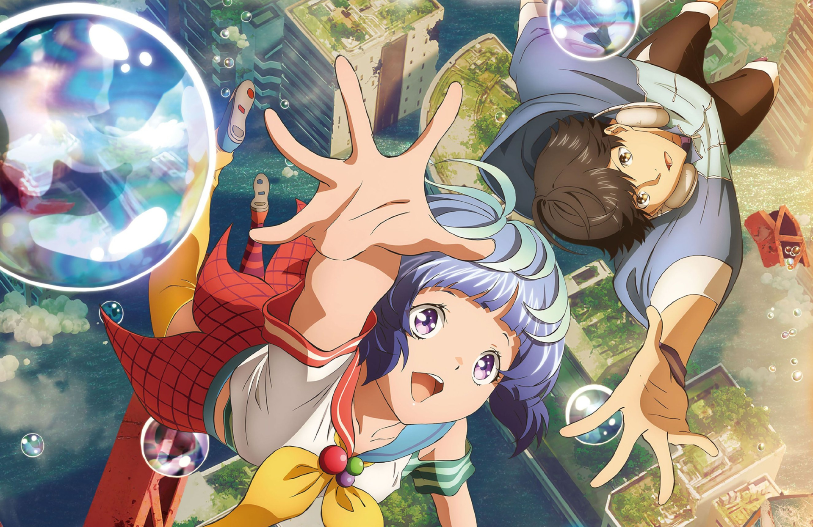

조회수 146,984회 2020. 3. 14. 프론트엔드 강의 - 프론트엔드 개발자 되기 입문편⭐️ (개념 + 클론코딩)
유튜브 사이트를 반응형으로 만들어 볼꺼예요. 순수 HTML, CSS를 이용해서 (Javascript 약간) 만들어 보고, 다음에 Javascript를 배우면 동적으로 서버에서 데이터를 가져오는 연습을 더 해보도록 할께요. (↙ 자세한 내용)
1M views 1 month ago
드림 코딩 1M subcribers
Up next

50분 영상 현실인가요? 😅 길지만 끝까지 다~ 봐주실꺼죠? 🙏🏼 (하.지.만. 1시간 안에 우리가 멋진 정적인 유튜브 웹사이트를 만든다는것!)
강의관련 사이트나 자료는 동영상 정보란에서 확인해 주세요 :) 82K 50분 영상 현실
50분 영상 현실인가요? 😅 길지만 끝까지 다~ 봐주실꺼죠? 🙏🏼 (하.지.만. 1시간 안에 우리가 멋진 정적인 유튜브 웹사이트를 만든다는것!)
강의관련 사이트나 자료는 동영상 정보란에서 확인해 주세요 :)82K 50분 영상 현실
50분 영상 현실인가요? 😅 길지만 끝까지 다~ 봐주실꺼죠? 🙏🏼 (하.지.만. 1시간 안에 우리가 멋진 정적인 유튜브 웹사이트를 만든다는것!)
강의관련 사이트나 자료는 동영상 정보란에서 확인해 주세요 :)82K 50분 영상 현실